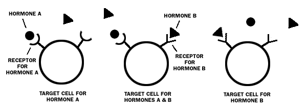
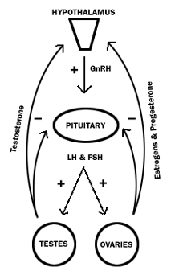

DISCLAIMER
The information contained herein is to be used for educational purposes only.
The author is not a medical professional, and this information should not be
considered medical advice. This information should NOT be used to replace consultation with or treatment by a trained medical professional. The listing of a medication herein does not imply endorsement by the author.
What is a hormone?
What is endocrinology?
Where do hormones come from and what do they do?
How do hormones cause their effects?
How are hormones regulated in the body?
The "sex hormones:" testosterone, estrogen,
and progesterone
"Steroids"
Primary and secondary sex characteristics
The production of sex hormones in the body
So what does all this mean for FTM transsexuals?
Resources for further reading on the subject of hormones and
endocrinology
What is a hormone?
"Hormones" are important chemical messengers in the body that effectively
transfer signals and instructions from one set of cells to another.
What is endocrinology?
"Endocrinology" is traditionally defined as the branch of biological
science that concerns itself with the actions of hormones and the organs in
which hormones are formed. A doctor who specializes in the function of hormones
is called an "endocrinologist."
Where do hormones come from and what do they do?
Hormones are secreted (usually into the bloodstream) by a collection of glands
inside the body referred to as the "endocrine system." (A "gland"
is a group of cells that produces and secretes chemicals into the body.) The
major glands that make up the endocrine system include the hypothalamus, the
pituitary gland, the thyroid and parathyroids, the adrenals, the pineal body,
and the ovaries and testes (the "gonads").
Hormones can also be produced synthetically in a laboratory setting and are prescribed by doctors to treat disease or hormone deficiencies. For example, if a person has had their thyroid gland removed, a doctor may prescribe synthetic thyroid hormones to replace those that the person's body can no longer produce.
Over fifty different hormones have been identified in the bodies of humans, and more are still being discovered. Hormones influence and regulate practically every cell, tissue, organ, and function of our bodies, including growth, development, metabolism, maintenance/balance of our internal environment ("homeostasis"), and sexual and reproductive function.
How do hormones cause their effects?
Most hormones circulate via the blood, thus coming into contact with all kinds
of cells throughout the body. However, a given hormone usually affects only
a limited number of cells, which are called "target cells" for that
hormone. A target cell responds to a hormone because it bears "receptors"
for that hormone. Hormones, like all molecules, have a specific molecular shape,
and thus will fit into certain receptors but not others (see illustration below).

When it binds to the receptor site of a target cell, a molecule might act as an "agonist" or as an "antagonist" (or some combination of the two).
"Agonists" are molecules that bind to the receptor site of a target cell and produce biological effects as a result. For example, when the hormone "testosterone" is secreted into the blood and binds to a target cell's receptor site, biological effects from that binding will result in producing a specific physical change (such as the stimulation of a hair follicle to produce a whisker on the chin). Testosterone is an example of an agonist in this case.
Bear in mind that in many cases, more than one distinct hormone can bind to the same receptor. For a given receptor, different agonists can have dramatically different potencies.
"Antagonists" are molecules that bind to the receptor site of a target cell while at the same time failing to trigger the biochemical results of the agonist. Antagonist molecules may compete with an agonist for receptor sites, thus preventing or blocking the binding of an agonist. For this reason, antagonist compounds are often used as drugs.
An example of an antagonist is the drug Tamoxifen, which serves as an estrogen-receptor antagonist in breast tissue (it is sometimes called an "anti-estrogen" in medical literature). Tamoxifen is used in the treatment of breast cancer. It binds to estrogen target cell receptors in the breasts and blocks the ability of estrogen to produce its biologic effects--one of which is the feeding of the cancer itself.
Interestingly, while Tamoxifen acts as an estrogen antagonist in breast tissue, it also acts as an estrogen agonist in the bones. That is, Tamoxifen produces a mixture of antagonist/agonist reactions, blocking the actions of estrogen in the breasts, while also producing the (positive) biologic effects of estrogen in the bones.
How are hormones regulated in the body?
The production of hormones in the body is almost always regulated by a delicate
set of feedback relationships, or "feedback loops." Most (but not
all) hormone secretion is governed by "negative" feedback loops, wherein
the amount of a substance in a system regulates its own concentration. When
concentration of a hormone rises to above desired levels, a series of steps
is taken within the system to cause the concentration to fall. Conversely, steps
are taken to increase concentration when the level is too low.
Imagine a home-heating system as an example of a simple negative feedback loop. When the temperature of a room rises above the set point of a thermostat, the thermostat is then triggered and shuts off the furnace (the heat feeds back negatively on the source of heat). When temperature drops back below the set point, negative feedback is gone, and the furnace turns back on to produce more heat.
The above example of a feedback system is quite simplified; the body relies on complex positive and negative feedback systems, often involving multiple different hormones, steps, and tissues to regulate bodily functions.
In order to function, the body needs healthy endocrine glands that work correctly, a properly functioning blood supply to move hormones through the body to their target points, receptor sites on the target cells for the hormones to do their work, and a feedback system for controlling how and when hormones are produced and used. Any disruption in that system can cause problems that may require medical intervention.
The "sex hormones:" testosterone, estrogen,
and progesterone
The hormones commonly considered to be "sex hormones" in the body are testosterone,
estrogen, and progesterone. Testosterone is often referred to as a "male"
hormone, and estrogen and progesterone are often referred to as "female"
hormones. However, it is interesting to note that no exclusively "male"
or "female" hormones have been identified. All hormones characterized
to date are present in all people regardless of sex, as are the receptor mechanisms
that respond to those hormones.
In fact, the physical observation of the sexes we call "male" and "female" in nature is the result of differences in the amounts of individual hormones in the body and differences in their patterns of secretion (first in utero and then again during puberty) rather than their presence or absence. In other words, testosterone, estrogen, and progesterone are produced by men and women, but in differing amounts and in different patterns.
"Steroids"
Endocrinologists classify sex hormones as being in the family of "steroid
hormones"--derivatives of cholesterol that are synthesized mainly by the
gonads and, in smaller amounts, the adrenal gland. Steroid hormones are typically
classified into five groups of molecules, based primarily on the receptors to
which they bind:
* Androgens, such as testosterone
* Estrogens, such as estrodiol and estrone
* Progestins, such as progesterone
* Glucocorticoids, such as cortisol
* Mineralocorticoids, such as aldosterone
For the purposes of this section, only the androgens, estrogens, and progestins are considered, as they are the hormones mainly responsible for the development "secondary sex characteristics," a term further described below.
Primary and secondary sex characteristics
"Primary sex characteristics" refer to physical characteristics present
in the human body that are directly involved in reproductive function: namely
the gonads and their accessory structures. The development of primary sex characteristics
happens to the fetus in the womb.
"Secondary sex characteristics" refer to physical characteristics that are typically associated with "males"/"men" and "females"/"women" but are not necessarily related to reproductive function. Examples would include facial hair growth and deepening of the voice in men, and growth of breasts and increased fat deposits around the hips in women. The development of secondary sex characteristics usually begins at puberty, as the levels and patterns of secretion of the sex hormones in the body begin to change at that time.
The androgen testosterone (and its derivative dihydrotestosterone [DHT]) is responsible for producing masculine secondary sex characteristics such as facial hair growth, deepening of the voice, increased body hair growth, and increased muscle development.
Estrogen and progesterone play a vital role in the menstrual cycle in females. Estrogen is also mainly responsible for producing feminine secondary sex characteristics such as breast development and increased body fat deposits around the hip and thigh areas.
The
production of sex hormones in the body
Testosterone, estrogen, and progesterone are produced mainly in the "gonads"
(the testes and the ovaries). Two other important hormones-- "luteinizing
hormone" (LH) and "follicle-stimulating hormone" (FSH)-- stimulate
the gonads into secreting sex hormones. LH and FSH are secreted from cells
in the anterior pituitary gland, and are called "gonadotropins" because
of their role in stimulating the gonads.
The principle regulator of LH and FSH secretion is "gonadotropin-releasing hormone" (GnRH). GnRH is secreted from the hypothalamus. GnRH stimulates secretion of LH and FSH, which in turn stimulates gonadal secretion of the sex steroids testosterone, estrogen and progesterone (see diagram at left). In an example of a negative feedback loop, the presence of a certain level of sex steroids then inhibits further secretion of GnRH. Numerous hormones influence GnRH secretion, and feedback control over GnRH and LH/FSH secretion is considerably more complex than depicted in the diagram.
So what does all this mean for FTM transsexuals?
For trans men who have been born into "typically female bodies" (i.e.,
bodies that have functional ovaries), as well as trans men who were born into intersex
bodies, the goal of testosterone therapy is to induce and maintain the presence of masculine
secondary sex characteristics. This is done by introducing synthetic testosterone
into the body, thereby activating the androgen receptor sites on
target cells, which then induce numerous masculinizing physical changes. (Specifics
about FTM testosterone therapy are included in the section "FTM Testosterone
Therapy Basics.")
Over time, as significant and regular doses of testosterone are added into a body that has functional ovaries, the hormonal balance in the body is altered, as are the regular feedback patterns that control estrogen, progesterone, menstrual flow, and fertility patterns. Therefore, testosterone therapy also usually results in an eventual stop to monthly periods and an interruption of fertility. Over time with testosterone therapy, fertility may be interrupted permanently (though this is not always the case, particularly if testosterone therapy is discontinued).
For those trans men who are post-menopausal, who have otherwise nonfunctioning ovaries, or who have had surgical removal of the ovaries, testosterone therapy will induce masculinizing secondary sex characteristics while not having to "compete" with the estrogen/progesterone hormonal production and feedback that is present in those with active ovaries.
In addition to testosterone therapy, other hormone treatments may be considered for the treatment of transsexual men. For example, if a trans person is being treated for gender dysphoria at a young age and has not yet undergone his first female puberty, the onset of that puberty could be delayed through "non-permanent" hormonal treatment. By treating a young trans person with drugs to suppress gonadotropin secretion (which work by blocking the GnRH receptor) his puberty could be temporarily delayed while he considers his options for further treatment. Such a treatment may provide him with time to make a responsible decision about starting androgen therapy, as many of the effects of androgen therapy are not reversible.
Whether this type of treatment is available to a trans patient will depend on the regulation and availability of such drugs in the country of treatment, as well as the informed opinion of medical experts. Examples of GnRH inhibitor drugs include nafarelin acetate (delivered in the form of a nasal spray), goserelin acetate ("Zoladex," implant form), danocrine ("Danazol," capsule form) and leuprolide acetate ("Lupron," injection form).
Finally, there are instances when a progesterone-based hormone therapy might be used in the treatment of trans men. Progesterone may be used in some instances to help stop menstrual flow if testosterone therapy alone does not adequately stop the cycle after a reasonable period of treatment. A short course of progesterone may also be prescribed to induce a shedding of the uterine lining after testosterone therapy has progressed, in the event that there is any unusual buildup of the endometrium. This may help prevent spot bleeding as well as potentially decreasing the risk of uterine cancer. To learn more specifics about FTM testosterone therapy, please read the sections "FTM Testosterone Therapy Basics" and "FTM Testosterone Therapy and General Health."
Was this page helpful to you?
Please consider donating to ftmguide.org!
Resources for further reading on the subject of hormones and endocrinology
Bibliographic sources:
Pathophysiology of the Endocrine System (online textbook)
http://arbl.cvmbs.colostate.edu/hbooks/pathphys/endocrine/index.html
Online Biology Book: The Endocrine System (online textbook)
http://www.emc.marIcopa.edu/faculty/farabee/BIOBK/BioBookENDOCR.html
Williams, Robert H. and Wilson, Jean D., eds., Williams Textbook of Endocrinology, W.B. Saunders, 1998.
Greenspan, Francis S. and Gardner, David G., eds., Basic and Clinical Endocrinology, Lange Medical Books/McGrawHill, 2004.
FTM testosterone therapy-specific source:
www.nickgorton.org
Contains the downloadable book Medical Therapy and Health Maintenance for Transgender Men: A Guide For Health Care Providers by R. Nick Gorton MD, Jamie Buth MD, and Dean Spade Esq. This is the most complete care guide available for FTM patients to date-- an excellent resource to show your doctor.
For information on specific medications mentioned in this section:
WebMD
http://www.webmd.com
Healthdigest.org: an online directory of health information
http://www.healthdigest.org
Back to Hudson's FTM Resource Guide main page
Copyright, disclaimer, and privacy information